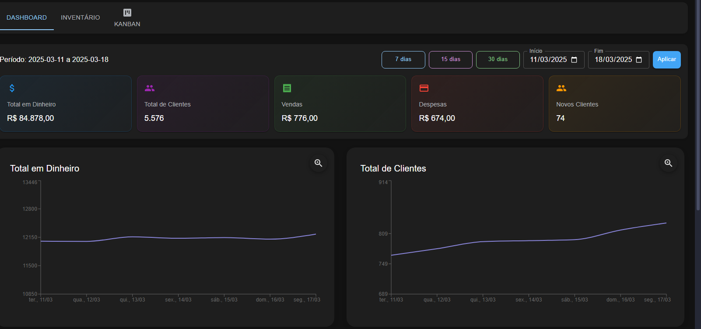
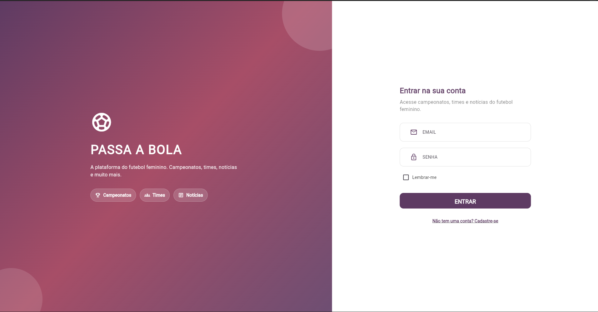
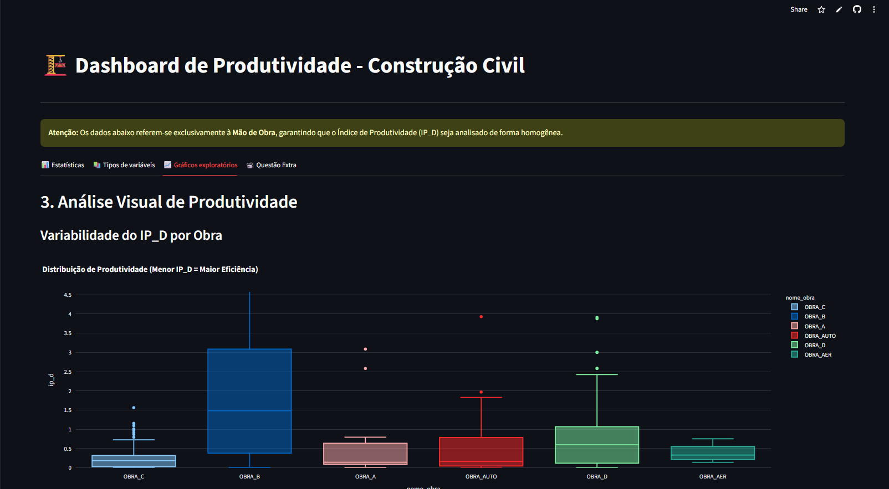
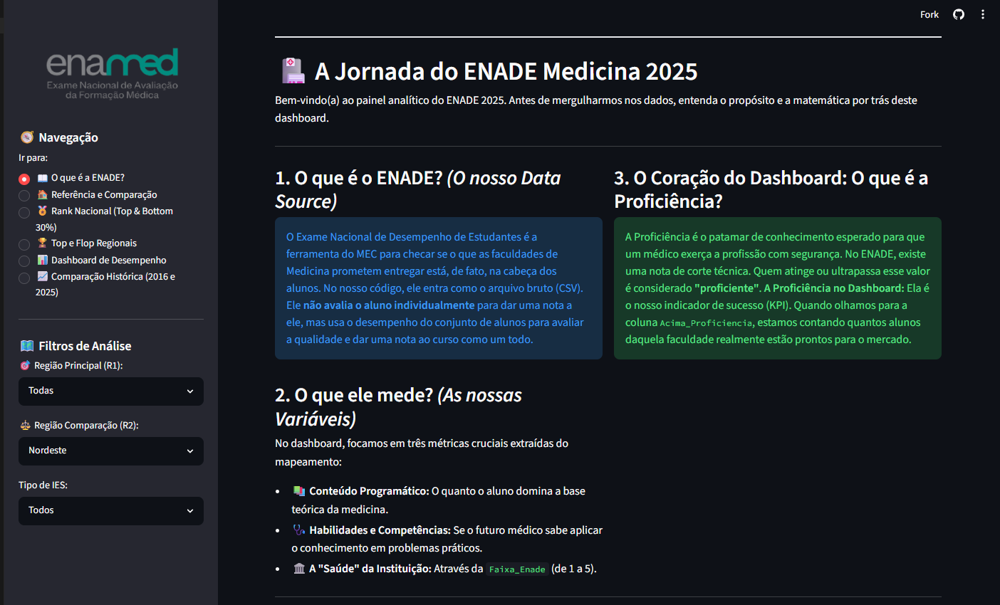
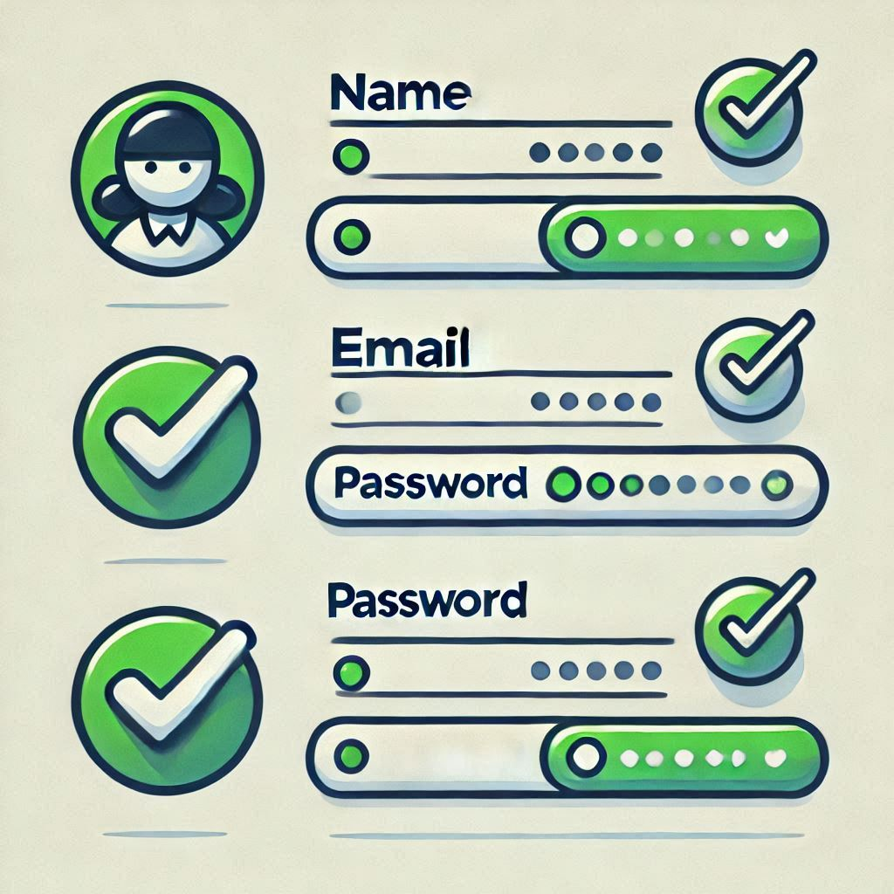

Desenvolvimento
Experiência prática com Python, JavaScript, React, SQL e Flutter em projetos de ponta a ponta.
Estudante de Engenharia de Software
Sou Gabriel Sakura, estudante da FIAP. Desenvolvo projetos web e mobile com foco em interfaces úteis, dados bem estruturados e resolução de problemas reais.
01 — Sobre mim
Tenho interesse em transformar necessidades em produtos claros, funcionais e sustentáveis. Em projetos acadêmicos, já atuei com aplicações web, bancos de dados, dashboards, automação e desenvolvimento mobile.
Experiência prática com Python, JavaScript, React, SQL e Flutter em projetos de ponta a ponta.
Gosto de organizar dados e transformá-los em dashboards, relatórios e informações acionáveis.
Trabalho com Git, Scrum e Kanban, valorizando comunicação clara e entregas incrementais.
02 — Habilidades
Selecione uma área para ver como ela aparece nos meus projetos.
03 — Projetos em destaque
01 / FailGuard
Aplicação para visualizar temperatura, corrente e vibração de máquinas, com dashboard, relatórios e suporte de IA para análise das leituras.

02 / Dashboard
Interface para acompanhar indicadores financeiros, inventário, usuários e tarefas em um quadro Kanban.

03 / Passa a Bola
Aplicativo multiplataforma para conectar atletas, clubes e torcedores, com perfis, campeonatos e persistência em nuvem.
04 — Laboratório
Projetos menores em que experimento dados, acessibilidade e soluções com IA.



05 — Contato
Estou buscando uma oportunidade de estágio para evoluir com um time, contribuir em projetos reais e seguir construindo uma base técnica sólida.